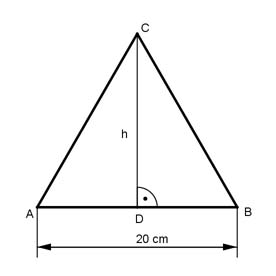
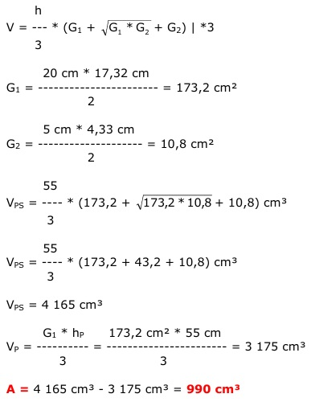

Aufgabe 276 Ein 55 cm langer Dreikantstahl hat die Form eines Pyramidenstumpfes mit gleichseitigen Dreiecken als Grund- und Deckfläche. Seitenlänge unten 20 cm, oben 5 cm. Wie groß ist der Abfall A, wenn der Stumpf zu einer geraden Pyramide mit gleicher Grundfläche abgeschliffen wird? A = Pyramidenstumpfvolumen VPS - Pyramidenvolumen VP Höhe der Grundfläche:  Satz von Pythagoras im Dreieck DBC: BC = AB = AC = 20 cm DB = AB/2 = 20 cm/2 = 10 cm BC² = DB² + DC² | - DB² DC² = BC² - DB² = 20² cm² - 10² cm² = 300 cm² |√ DC = 17,32 cm = h Höhe der Deckfläche: hD² = 5² cm² - 2,5² cm² = 18,75 cm² |√ hD = 4,33 cm 